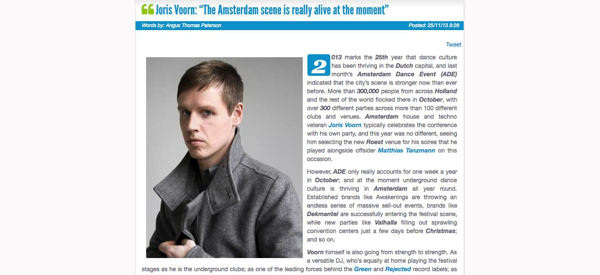
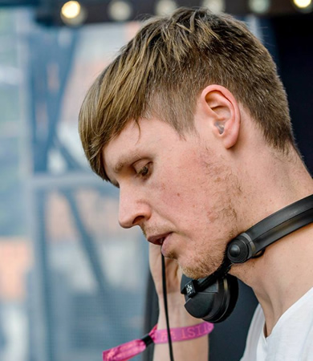

Joris Voorn: “The Amsterdam Scene is Really Alive at the Moment”
{kind=link}

2013 marks the 25th year that dance culture has been thriving in the Dutch capital, and last month’s Amsterdam Dance Event (ADE) indicated that the city’s scene is stronger now than ever before. More than 300,000 people from across Holland and the rest of the world flocked there in October, with over 300 different parties across more than 100 different clubs and venues. Amsterdam house and techno veteran Joris Voorn typically celebrates the conference with his own party, and this year was no different, seeing him selecting the new Roest venue for his soiree that he played alongside offsider Matthias Tanzmann on this occasion.
However, ADE only really accounts for one week a year in October; and at the moment underground dance culture is thriving in Amsterdam all year round. Established brands like Awakenings are throwing an endless series of massive sell-out events, brands like Dekmantel are successfully entering the festival scene, while new parties like Valhalla filling out sprawling convention centers just a few days before Christmas; and so on.
Voorn himself is also going from strength to strength. As a versatile DJ, who’s equally at home playing the festival stages as he is the underground clubs; as one of the leading forces behind the Green and Rejected record labels; as well as the producer behind jackin’ efforts like last year’s Spank The Maid, or this year’s somewhat more mellow Ringo. That’s not to mention his long gestating next artist album, which he insists will finally see the light of day next year. He’s also dropped hints in terms of a hugely “commercial act” he’s currently wrapping up a remix of.
Voorn is just as consistent as the enduring clubbing scene of his home city; so of course, Ibiza Voice took the opportunity at ADE to sit down for a catchup as to what’s going on in 2013.
So how was your gig last night? It was really amazing. It was at a very special venue called Roest. It’s a little bit outside of the city centre, but it’s a big warehouse. Personally I’d never been there before, and during the summer they have a ‘city beach’ right next to it where you can go and sit on the sand and have a cocktail. But the party last night was in the big warehouse next door to that. Very raw, very rough, but for me it was a very good vibe. Just walking into the building, for me it felt like back in ’93. All the people going to illegal raves… that same feeling.
I think the scene is really alive at the moment, especially on the party side. There’s a lot of new initiatives, new parties that I had never heard of...
I saw your show last year at ADE where you opened up Studio80 from 9pm, and played all evening. You usually try and do something pretty special for the conference. Yep, I’ve been doing that for quite a few years. This venue came up, and it was a great opportunity to do something different. I think this year there’s been so many great new venues, pop-up venues and such. It’s nice to get out of the club environment and do something special.
Amsterdam seems to be firing at the moment in terms of house and techno. Yeah definitely. I think the scene is really alive at the moment, especially on the party side. There’s a lot of new initiatives, new parties that I had never heard of. I’m a travelling artist, I play outside of the country more than I play here, so I don’t know what is happening exactly. But all the time I see posters for parties I hadn’t heard of, venues I hadn’t heard of, artists I hadn’t heard of. And new parties selling out 5000 people venues. It’s like a new internal revolution.
You’re quite an iconic Amsterdam DJ yourself. How do you see ADE as a cultural event? I think it’s grown so big. And I’ve really seen it grow, I can’t say it was there since the beginning, but it was maybe seven or eight years ago I started going. It used to be quite small and intimate, and I still would like to think it is still that way in a sense. But the street downstairs outside of the hotel, it’s more crowded than ever. Back in the days they didn’t even really shut down the streets, but they had to that last year because it was getting too busy. But it’s really nice for me that in my hometown, the whole dance industry comes together. I think it’s the most important dance convention worldwide, it totally beats Miami which is more about the parties these days.
I guess it says a lot about Amsterdam as one of the world’s great dance cities. I think we have a different musical footprint than for instance Berlin. If you speak about the city’s influence musically in dance, it’s a lot more on the commercial side. When you’re talking about the underground artists, while I still feel that we matter in the world, it’s still not as much as the commercial guys.
The funny thing is, the big commercial DJs, they don’t even play in Holland so much. They’re being exported to the world, while the scene they play to in Amsterdam is relatively small. The underground scene in Amsterdam though is just ridiculous. It’s like a self-sustaining system and scene, which is really amazing.
I caught you performing at the mainstage of Mysteryland just outside of Amsterdam this year. It was quite refreshing to have a change form all the EDM in that setting. The main stage at Mysteryland is quite big, though not as big as Tomorrowland in Belgium for example. I’ve never played the mainstage there, and I don’t think I ever would. I think Mysteryland is a different kind of festival, and that was a nice gig, though I don’t think I’m necessarily much of a mainstage DJ. At least, not at the big crossover commercial festivals. I prefer to play the smaller stages there, where people really do come for your kind of music.
Whichever stage you play at a festival though, they’re generally peaktime performances. The festival season is over now, and I’ve been doing a lot more club gigs, which musically are completely different. You can go a lot more deep, and play the sort of stuff that would just never work at the big events. So I think right now I’m playing a different kind of sound than I was a few months ago. Which I’m very glad about, because you can only do so many of those gigs. I mean, I love to play the big stages, and I play the sound that works for that setting; but after having done that for a couple of months, you want to go back down underground and focus on the more musically challenging sets.
Your most recent single was Ringo, what else have you got coming up? I’m working on a couple of different remixes at the moment; I always seemed to be working on them. There’s a more commercial one that I’m working on that I mentioned on my Facebook, but I’m not going to say what that is [laughs]. But people are going to be surprised. It’s not even a dance artist. So it’s not Avicii, it’s not Swedish House Mafia or anything like that. I can’t say though, because I still have to finish the remix and they might decide in the end that they’re not satisfied and it’s not going to be released. So I don’t want to jinx it. Otherwise, I’m working on a few other different remixes, and trying to finish my new album as well.

Personally I don’t listen to any house or techno albums, so I wanted to make something that I would enjoy listening to myself. I wanted to push myself as an artist. The tempo is the same as a lot of my other stuff, around120-124BPM, but there’s not so many beats in there, not so much four to the floor.
I think Ringo is going to be in there, but that’s one of the more dance-orientated tracks. The rest of it though, it’s more about real melodies, song structures and that kind of stuff.
Do you have any idea about when it’s going to come out? [laughs again] I do feel that it should be finished soon. I do feel that I’m close to it, though a couple of tracks still have to be finished. It should be out somewhere in the first half of next year.
One last question. Something that was an amusing little distraction over the summer was your Twitter beef with DJ Sneak after you performed alongside each other at Pacha Ibiza. It’s funny how little things like that take on a life of its own. [laughs] I never intended that, though I do wonder if Sneak intended it or not. I wonder what kinds of questions he gets when he gets interviewed. I’m kind of curious to hear what his opinion about this whole thing is. His rage about everything, and everyone. I think it’s kind of ridiculous what he’s doing.
It’s hard to tell whether it’s genuine, or it’s part of a calculated marketing campaign. Yeah, I don't even know myself actually. I don’t know why he would hate on other people so much. It’s really not necessary, and it doesn’t bring anything positive to the scene. I do like a little bit of challenging each other on Twitter. And humour is fantastic, and the social networks are a very fun medium that you really can use for your benefit. Even me mentioning on my social networks that I’m doing a super commercial remix, it tickles people, and it’s a bit ironic from my side. People don’t like it when underground guys go and remix a commercial artist, even when the remix itself isn’t commercial. People will tell you off about it, but I don’t care about that, and I like to play around with that. But if you’re going to attack a good artist…
I don’t even see the point of having a go at the Swedish House Mafia. I don’t either. I think the whole incident with me was really stupid. He was just being a dick. For want of a better word, he was just being a dick on that night. And nothing would have happened to take it further, as I wasn’t going to tweet about it myself. The only thing is that I wanted to see is how he felt about the whole night anyway, so I checked his Twitter, and he’s tweeted about how the highlight of his night was when he told my manager to fuck off. And I’m like okay, if that’s really the highlight of your evening… what’s wrong with you, that’s quite a thing to say. And that’s when I responded to that. And the ridiculous thing is that everybody seems to be interested in it, everybody seems to be listening in on it, even though there’s not really a lot of content to it. It’s a very hollow subject, though people do like to discuss it.